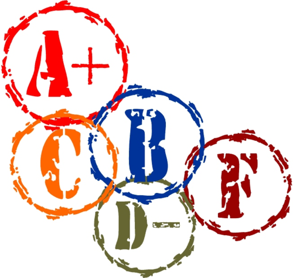

—

In order to get a grade for your productes, you will need to perform a self-evaluation. After I harvest your code from your git repos, I will push out a self-evaluation report form (in plain txt). You will have 24 hours to fill it out and push it back to origin.
Your submissions will be evaluated along two dimensions:
for correctness, via delivery inspections of all requested files (and no extras) plus "test fests." The latter means I will run your test harnesses on the instructor’s and all of your peers’ tests.
If you disagree with the result of a test fest, send me an email and set up an appointment. You will have to argue that our sample implementation’s code and/or integration tests are wrong. (This is not impossible.)
for systematic design, via design evaluation and code inspections. That is, after you turn in your self-evaluations, we will read select pieces of the requested files and check them against your self-evaluation basic software quality criteria, design standards taught in your earlier courses.
The accuracy of your self-evaluation is part of the inspection score.
For any disagreements concerning your grades, see your instructor.